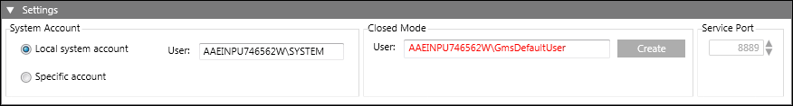

Service Port Settings (Only on Server SMC)
You can configure the Service port only on server installations. It helps in aligning the projects on client or FEP stations with the projects on server.

The Service port is used by the client and FEP to obtain the project information from the server.
This communication happens using GMS SMC ProjectData Service, which runs on the Service port. This service provides server project information (such as name, language and configured ports) to the clients. It does not provide information about the outdated projects.
The configuration range is 1 through 65535; 8888 is the default value.
Tips
- To edit the Service port number, you must first stop the GMS SMC Project Data Service listed in the Services expander.
- The Service port number displays in grey if the GMS SMC Project Data Service is stopped and in red when started, indicating that the port is in use, but unsecured.
- While creating a project on the client/FEP, if the Service port does not match the Service port number on the server, a message displays and you will not get the project information for server projects.
- In distributed environment, if sync does not work:
Binding/security mismatch between sender and receiver: To troubleshoot this error message, first check if GMS SMC Project Data Service is started in the Services expander and you are able to access the URL
http://localhost:8888/SiemensGmsSmcProjectDataService for this Server using browser. (on local machine)
If not, then check if machine and port of GMS SMC Project Data Service are accessible from the machine you want to access it from.
When the GMS SMC Project Data Service is not working on Server 2 you can try to access the URL
http://<Server1Name>:8888/SiemensGmsSmcProjectDataService
Additionally, you can also check if this machine and Service port is opened in firewall.